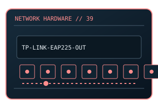

[ MODEL-SPECIFIC NETWORK HARDWARE ]
TP-Link EAP225-Outdoor V1 AC1200 Outdoor Access Point
Outdoor dual-band access point with mesh/roaming features depending on controller. This entry uses the labeled manufacturer model identifier and cites primary product/support documentation.

MODEL IDENTIFICATION: Match the complete model/part number and hardware revision on the item label to manufacturer documentation. Do not apply this entry to near-name variants.
Exact specifications and compatibility
| Cataloged model | TP-Link EAP225-Outdoor V1 AC1200 Outdoor Access Point |
|---|---|
| Dedicated subcategory | Network appliances: routers & access points |
| Bus / host interface | 1 × Gigabit Ethernet; 802.3af PoE or passive PoE input per hardware revision. |
| Ports / physical interfaces | 1 × RJ-45; outdoor antenna system integrated. |
| PHY, radio or protocol | 802.11ac dual-band 2.4/5GHz; 2×2 radios. |
| PoE | PoE input method is revision-specific (802.3af/passive as documented by TP-Link); no PoE output. |
| Link-rate vs throughput | AC1200 aggregate PHY class; actual payload varies with client, channel, interference and weatherproof installation conditions. Link rates are nominal negotiated/PHY specifications, not measured application throughput; no measured specimen result is claimed. |
| Firmware / driver support | TP-Link Omada firmware and controller; hardware revision-specific downloads apply. |
| Compatibility checks | Use outdoor-rated installation, grounded cable/surge protection where required by local electrical codes, and only listed power input. |
Model-specific notes
Confirm V1 revision and power method before installation.
Primary manufacturer sources
- TP-Link EAP225-Outdoor official product supportManufacturer product specification or documentation for the exact model/family.
- Manufacturer support and compatibility resourcesFirmware, driver, compatibility, revision or support details; applicability may depend on the exact hardware revision and region.
Vendor maximum rates are not test results. Confirm regional variants, hardware revision and current support status with the manufacturer.